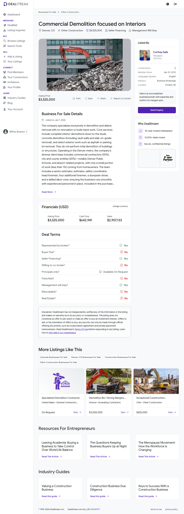

Strengths
- Pure-play demolition focus; asset-light vs. full GC
- In-house hauling + dumpster capability (Fambro synergy)
- Real management layer; management stays post-sale
- Institutional clients: Denver Public Schools, airport
Evaluated as a roll-up add-on for Fambro Waste Management (commercial/construction & demolition waste). Relaxed add-on thresholds apply: ≥5 FTE / ≥$500K EBITDA / ≥5 years. Score is out of 110.
| # | Criterion | Status | Evidence |
|---|---|---|---|
| 1 | ≥ 5 full-time employees (relaxed add-on floor) | PASS | Org chart: senior estimator, estimator, safety coordinator, head foreman, 4 foremen, dumpster driver, plus skilled labor crew — ~10+ staff. |
| 2 | EBITDA ≥ $500K/yr (relaxed add-on floor) | PASS | Listing cash flow $642,941 (SDE/discretionary proxy — not add-back-verified EBITDA). |
| 3 | ≥ 5 years in business (relaxed add-on floor) | INSUFF. | Founding year not disclosed; legal name masked. Deep org chart, $850K backlog and DPS/airport relationships imply est. 12+ yrs — unconfirmed. |
| 4 | 3+ yrs YoY revenue & profit growth | INSUFF. | No 2024/2025 revenue split disclosed; only a single trailing figure given. Trend unverifiable. |
| 5 | Asking price ≤ 4.0x EBITDA | FAIL | $3,525,000 ÷ $642,941 = 5.48x cash flow — above the 4.0x ceiling; top of the 4.0–5.5x band. |
| 6 | DSCR > 1.4 (informational) | INSUFF. | Not computable without a financing structure; rough proforma DSCR ≈ 1.3–1.5 — borderline. |
Overall Buy Box: CONDITIONAL (add-on) — 2 hard PASS, 3 insufficient-data, 1 FAIL. Does not meet standalone thresholds but qualifies as a roll-up add-on for Fambro Waste Management (relaxed floors). Conditions: seller must disclose a 2–3 year revenue/profit history, and price must be negotiated from 5.48x toward ≤4.0x cash flow as a closing condition.
| # | Field | Value | Source |
|---|---|---|---|
| 1 | Business Name | Commercial Demolition Focused on Interiors (legal name withheld) | DealStream mwlpo5 |
| 2 | Lead Source | DealStream listing mwlpo5 — manual submission | Task input |
| 3 | Years in business | 12+ (est.) | Inferred — see Appendix C |
| 4 | Real estate owned | None disclosed (12,000 sq ft facility, likely leased) | DealStream mwlpo5 |
| 5 | FF&E value | $505,000 ($345K vehicles/trailers + $160K equipment) | DealStream mwlpo5 |
| 6 | Full-time employees | ~10+ (estimating, safety, 5 foremen, dumpster driver, crew) | DealStream mwlpo5 |
| 7 | Part-time employees | Not disclosed | — |
| 8 | Contractors / 1099 | Not disclosed | — |
| 9 | Business address | Denver metro, CO (exact address withheld) | DealStream mwlpo5 |
| 10 | Revenue 2022 | Not disclosed | — |
| 11 | Revenue 2023 | Not disclosed | — |
| 12 | Revenue 2024 | Not disclosed (no split given) | — |
| 13 | Revenue 2025 | $2,957,133 (trailing "Sales" as listed) | DealStream mwlpo5 |
| 14 | Net / FCF 2022 | Not disclosed | — |
| 15 | Net / FCF 2023 | Not disclosed | — |
| 16 | Net / FCF 2024 | Not disclosed | — |
| 17 | Net / FCF 2025 | $642,941 (listing "Cash Flow" — SDE proxy) | DealStream mwlpo5 |
| 18 | Asking price | $3,525,000 (seller financing available) | DealStream mwlpo5 |
| 19 | % revenue growth YoY | Not computable — only one year disclosed | — |
| 20 | Yearly revenue retention | Not disclosed (repeat GC/municipal clients implied) | — |
| 21 | EBITDA margin | 21.7% ($642,941 ÷ $2,957,133) — SDE margin proxy | computed |
| 22 | Customer LTV | not disclosed | — |
| 23 | Customer CAC | not disclosed | — |
| 24 | Client concentration | No single-customer % disclosed; segments: GCs ~30%, city/county ~20%, homeowners <1% | DealStream mwlpo5 |
| 25 | 2024 financials + YTD link | Not provided — request from broker (Cortney Sells, The Firm) | — |
| 26 | Lead Score | 72 / 110 | computed |
| Item | Awarded | Max | Justification |
|---|---|---|---|
| Industry match | 20 | 20 | Commercial/C&D demolition + debris removal with in-house hauling — core adjacency to Fambro Waste Management. |
| EBITDA tier | 5 | 15 | Cash flow $642,941 — above $500K, not above $1M. >$1M tier = 5 pts. (SDE proxy.) |
| Years in business ≥10 | 10 | 10 | Founding year not disclosed; deep team, $850K backlog and DPS/airport relationships strongly indicate a 10+ yr firm. Awarded with (est.). |
| 3 yrs consistent growth | 0 | 10 | No multi-year revenue/profit history disclosed — insufficient data, not awarded. |
| Recurring revenue | 5 | 10 | Project/T&M demolition — not contracted recurring — but a repeat base of commercial GCs and municipal clients. Mixed = 5. |
| Customer concentration <20% | 0 | 5 | No single-customer % disclosed; cannot confirm <20%. Mitigant: seller financing offered. |
| Employees ≥10 | 10 | 10 | ~10+ staff named; clears relaxed (≥5) and standard (≥10) floors. |
| Valuation multiple | 7 | 15 | 5.48x cash flow — inside the 4.0–5.5x negotiation band (7 pts). Negotiate to ≤4.0x as a closing condition. |
| Low owner dependence | 5 | 5 | Estimating team, safety coordinator and head foreman over 4 foremen run operations; management stays post-sale. |
| Roll-up / add-on strategic fit (BONUS) | 10 | 10 | Direct add-on for Fambro Waste Management — demolition feedstock + existing dumpster/hauling capability = immediate vertical integration. |
| Total | 72 | 110 |
Note: Valuation line is in the 4.0–5.5x band — the deal requires negotiation to ≤4.0x cash flow (≈$2.57M) as a closing condition. Scored as a roll-up add-on for Fambro Waste Management; relaxed thresholds applied, denominator 110. 72/110 ≈ Pursue with conditions / revisit for the roll-up.
A Denver-metro contractor focused purely on demolition and debris removal. The exclusive-demolition positioning (no renovation/build-back) keeps the business asset-light relative to a full general contractor. Founding year and legal name are withheld in the confidential listing; the depth of the team and the standing institutional client base imply a well-established firm.
Ownership: Not disclosed. The listing offers seller financing and states management will stay on post-sale.
Milestones: (Year unknown) founded as a Denver-metro demolition specialist; built recurring project relationships with commercial GCs and municipal clients including Denver Public Schools and airport projects; listed for sale Jan 7, 2026 via Cortney Sells, The Firm.
Organization: Estimating function (senior estimator + estimator), a dedicated safety coordinator, and a field organization led by a head foreman over 4 additional foremen, a dumpster driver, and a skilled labor crew — a genuine management layer, not an owner-operator shop.

The listing is marketed confidentially; the owner's name, legal entity and principals are withheld pending NDA. Functional roles only are known.
Role not disclosed. Listing indicates management will remain post-sale, suggesting the owner is not the sole point of field execution. Background and contact withheld pending broker contact.
Listing broker / seller's representative. President of The Firm; 150+ business transactions since 2010; Main Street to lower-middle-market. Contact via DealStream listing mwlpo5 or The Firm Advisors, LLC.
Senior Estimator & Estimator (bidding/pricing); Safety Coordinator (OSHA/site safety — critical in demolition); Head Foreman + 4 Foremen (field leadership); Dumpster Driver (in-house debris hauling).
Services: Commercial demolition and debris removal only — interior demolition (gut-outs to the studs), concrete demolition (CMU/structural), and select exterior demolition (asphalt and parking-lot removal). Explicitly no renovation or build-back.
Pricing model: Project-based — fixed-price bids and time-and-materials demolition contracts. No recurring/subscription revenue. Estimating handled in-house by a two-person team.
Differentiators: Pure-play demolition focus (avoids GC capital/warranty exposure); in-house debris hauling (dumpster driver + trailers) — the exact overlap with Fambro's waste platform; dedicated safety coordinator (a credential for institutional/municipal bids); established relationships with commercial GCs and municipal buyers (Denver Public Schools, airport).
Industry size & trends: The U.S. Demolition & Wrecking industry is ~$11.2B in 2026, growing at a ~5.1% CAGR over 2020–2025 (IBISWorld). The broader C&D waste management market grew from ~$216B (2025) to ~$233B (2026), a ~7.5% CAGR, driven by sustainability mandates and urban redevelopment. U.S. C&D recycling rates are near 76%.
Drivers & barriers: Drivers — urban redevelopment, commercial tenant-improvement churn, school and infrastructure renovation, and landfill-diversion requirements. Barriers — fuel and subcontracted-labor inflation has compressed demolition-contractor profits; revenue is project-cyclical with commercial construction.
Competitive landscape (Denver peers): Superior Demolition, Inc. (commercial interior/exterior demolition since 1997); Gorilla Demolition, Englewood (woman-owned, 15+ yrs, Denver airport client); American Demolition, Inc. (1,000+ Colorado projects). Construction-sector M&A comps: specialty/heavy construction ≈ 2.0x–4.1x EBITDA and ≈ 2.2x–2.9x SDE — the subject's 5.48x ask is clearly above market.
Segments: Commercial general contractors ~30%; city/county/municipal ~20% (notably Denver Public Schools and airport projects); homeowners <1%. The remaining ~49% is unspecified — request a full breakdown from the broker.
Retention: Not disclosed. Repeat institutional and GC relationships imply meaningful repeat business but no contracted retention figure exists.
Recurring vs one-time: Effectively 0% contracted recurring — demolition is project-based. Revenue is repeat-but-not-contracted through standing GC and municipal relationships.
Concentration: No single-customer percentage disclosed; only segment-level mix (largest segment ≈30%). Concentration risk cannot be confirmed — an open diligence item. Seller financing is offered, which partially mitigates concentration risk per the Buy Box rules.
| Year | Revenue | EBITDA / Cash Flow | Margin | YoY |
|---|---|---|---|---|
| 2022 | Not disclosed | Not disclosed | — | — |
| 2023 | Not disclosed | Not disclosed | — | — |
| 2024 | Not disclosed | Not disclosed | — | — |
| 2025 (trailing as listed) | $2,957,133 | $642,941 (SDE proxy) | 21.7% | — |
Only a single trailing year is disclosed, so no growth trend can be drawn. Forward indicators are constructive: $850K backlog + $800K pipeline + $150K WIP ≈ $1.8M of identified forward work (~60% of trailing revenue) — supportive of near-term visibility but not a substitute for an audited 3-year history.
Implied multiple at ask: 5.48x trailing cash flow ($3,525,000 ÷ $642,941). Industry comps: ≈ 2.0x–4.1x EBITDA / 2.2x–2.9x SDE — the ask is well above market. At Biffrey's 4.0x ceiling, fair value ≈ $2.57M; the 5.5x tolerance caps it at ≈ $3.54M (essentially the ask). Negotiate toward $2.57M–$3.0M, supported by the absence of a disclosed multi-year track record. ~$630K of A/R is included in the price, improving working-capital economics at close.
Expansion: Front Range geographic expansion (Fort Collins to Colorado Springs) under the Fambro platform; broaden into adjacent selective-demolition niches.
Operational upside: Install EOS-style process discipline; tighten estimating-to-margin tracking; capture debris-disposal margin in-house rather than paying third-party tipping fees.
Strategic — Fambro Waste Management roll-up thesis: The central reason to pursue. Demolition is a direct generator of C&D waste; bolting it onto Fambro lets the platform capture the disposal/recycling margin currently leaking to third parties, cross-sell dumpster/hauling services to the demolition company's GC and municipal client base, and consolidate equipment, safety and back-office functions. The target already operates a dumpster driver and trailers — integration friction is low.
100-day plan sketch: (1) Re-cast financials to true EBITDA; reconcile SDE add-backs and confirm the 3-year trend. (2) Route demolition debris through Fambro disposal/recycling assets. (3) Retain the estimating team and safety coordinator; lock key-employee agreements. (4) Cross-sell Fambro waste/hauling into the DPS / GC / municipal base. (5) Standardize safety, permitting and bonding under the platform.
Field #3 — Years in business — Estimated at 12+ years (est.).
Method: The listing does not disclose a founding year and the legal name is withheld, so no Colorado Secretary of State record could be matched. The estimate is inferred from operational depth — a two-person estimating function, a dedicated safety coordinator, a head foreman over four additional foremen, an $850K contracted backlog, an $800K pipeline, and standing relationships with institutional buyers (Denver Public Schools, airport projects). A demolition firm does not accumulate that team structure, bonding capacity and municipal client base in under roughly a decade. Denver demolition peers with comparable institutional positioning (Superior Demolition est. 1997; Gorilla Demolition 15+ yrs) corroborate that such firms are typically 10+ years old. The Buy Box years criterion is marked INSUFFICIENT in the header but awarded rubric points on this (est.) basis — confirm via SOS filing in diligence.
Sources: dealstream.com/d/biz-sale/other-const/mwlpo5 ; superiordemo.com ; gorillademolition.com